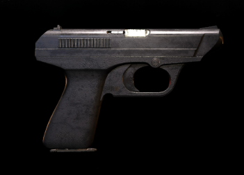
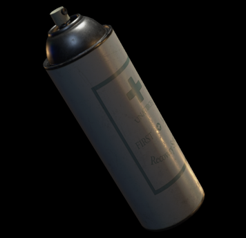

Armi
- Matilda: Pistola semiautomatica standard di Leon. Affidabile e precisa, ideale per gli zombie comuni. Mirale sempre alla testa per il massimo danno.
- W-870: Fucile a pompa potente con danno devastante a corta distanza. Perfetto per zombie in gruppo o per creare spazio. Usa con moderazione a causa delle munizioni limitate.
- Lanciafiamme: Arma efficace contro zombie ivy.
- SLS 60: Pistola con 5 round di calibro 9mm.
Oggetti Curativi
- Erba Verde: Cura base, un singolo oggetto ripristina una piccola quantità di salute. Essenziale per la sopravvivenza.
- Erba Verde + Rossa: Combinando l'erba verde con quella rossa si ottiene un oggetto curativo più potente che ripristina più salute.
- Erba Verde + Blu: Antidoto che cura l'avvelenamento causato da alcuni nemici.
- Erba Verde + Rossa + Blu: La combinazione più potente, cura completamente la salute e immunizza dall'avvelenamento.
- Spray Medico: Cura completa istantanea. Raro e prezioso, conservalo per emergenze critiche.

